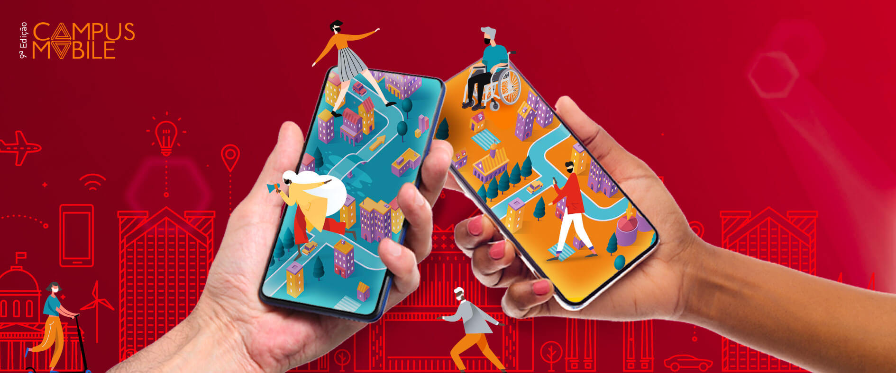

Eventos e Noticias
Tem alguém apaixonado por Digital e Inovação por aqui?
18 Jun 2021
Quer transformar o futuro dos produtos digitais com a gente? Então, vem pra Claro!
Estamos em busca de pessoas que estejam a fim de novos desafios, conectados com tecnologia, que curtam metodologias ágeis, tenham espírito empreendedor e sejam cheios de curiosidade para trabalhar com novos modelos de negócios em vários segmentos como:agronegócios, Indústria 4.0, health, fintech, educação, entre outros.
Aqui você vai encontrar um ambiente colaborativo, diverso, aberto ao questionamento e à construção de novas ideias. Se interessou? Então, vem compartilhar a sua paixão com a gente e se inscreva em uma de nossas oportunidades na área de Digital e do beOn, nosso hub de inovação.
Pensou em alguém que vai curtir essa novidade? Compartilhe essa informação!
Claro, Embratel e AWS criam centro de Excelência em nuvem
29 Mar 2021
A parceria, inédita no Brasil, irá potencializar a Internet das Coisas, com arquiteturas baseadas em microsserviços, capazes de atender aos mais diversos segmentos.
A Claro, a Embratel e a AWS (Amazon Web Services) anunciam parceria para a geração de novas oportunidades de negócios e para acelerar a adoção de aplicações baseadas em nuvem. Com o acordo, a AWS amplia sua participação na estratégia de inovação e de lançamentos de serviços e produtos da Claro, para aplicações voltadas a consumidores e mercado massivo, e também da Embratel, marca que atende as verticais de Grandes Empresas e Governo.
A primeira iniciativa é a adoção da tecnologia de computação em nuvem da AWS para implementação de um Centro de Excelência de Cloud (Cloud Center of Excellence – CCoE). Este centro de excelência apoia a adoção de soluções em nuvem em diversas iniciativas, segmentos e portfólios da empresa.
No segmento residencial, a adoção do streaming, realidade virtual e aumentada e a fragmentação das ofertas de conteúdo leva para a nuvem as redes de distribuição (CDN), abrindo novas oportunidades para a integração de diversos aplicativos e marketplaces, com sistemas de autenticação e pagamento, além da adoção de algoritmos cada vez mais sofisticados de busca e recomendação de conteúdos. As plataformas de vídeo, música e jogos online também migram aceleradamente para a nuvem.
No caso da infraestrutura de rede fixa e móvel, que cada vez mais se baseia em software, a nuvem viabiliza uma arquitetura de serviços convergente e distribuída, transformando-se em plataforma fundamental para a virtualização de elementos e funções de missão crítica para a oferta de conectividade e aplicações de alta performance por parte das operadoras de telecomunicações.
Juntas, Claro, Embratel e AWS atuam somando suas soluções para potencializar a Internet das Coisas, com arquiteturas baseadas em microsserviços, capazes de atender aos mais diversos segmentos.
“A colaboração é inédita no Brasil e focada em um elo transformador na digitalização da nossa sociedade. A Claro vem ampliando sua participação no mercado de nuvem através da Embratel, atendendo a demandas crescentes de serviços. E também operando suas próprias aplicações corporativas cada vez mais nesse ambiente. Com a tecnologia 5G, cada vez mais será necessário o processamento de aplicações de alta performance e baixa latência”, afirma Mário Rachid, diretor executivo de Soluções Digitais da Embratel.
“Esse é um projeto construído a quatro mãos, no qual o time da AWS já capacitou cerca de 350 especialistas da Claro na nossa cultura de nuvem focada em inovação, modelo de engajamento de clientes e desenvolvimento de produtos. Estamos fornecendo nosso know-how e nos aliando a um grande player do mercado, para desenvolver produtos e serviços para acelerar adoção de nuvem para nossos clientes em comum e buscar novas oportunidades de mercado”, comenta Cleber Morais, diretor geral da AWS no Brasil.
Embratel e AWS vão compartilhar também esforços comerciais e a sinergia das suas forças de vendas, desenvolvimento e suporte. A aposta é apoiar da melhor forma os clientes da Claro e da Embratel, sejam eles de governo ou empresas privadas de todos os portes e segmentos, que também estiverem iniciando ou aprimorando suas jornadas para adoção estratégica de nuvem.
Além do Centro de Excelência de Cloud e da atuação conjunta para acelerar o mercado de aplicações em nuvem, a integração de novas soluções da AWS no portfólio da Claro e da Embratel também deve ocorrer nesse período, como, por exemplo, as ofertas de AWS Outposts e de AWS Wavelength. (com assessoria de imprensa).
beOn realiza o primeiro Hackathon Claro-API
16 Mar 2021
Com objetivo de estimular a inovação dentro da Claro, engajar os colaboradores e parceiros de tecnologia para o intraempreendedorismo e fomentar a inovação, a maratona de desenvolvimento ocorrerá nos dias 15 e 16 de abril.
Apoiado em nossa missão, como desenvolver novas experiências para que a Claro continue promovendo diversão e produtividade na vida das pessoas, o beOn Claro realizará o primeiro Hackathon Claro-API, que tem como desafio desenvolver novas APIs para criar e disponibilizar novos produtos e serviços aos clientes da Claro. O evento quer reunir colaboradores e parceiros de tecnologia com espírito empreendedor e que tenham a ambição de transformar o nosso negócio.
A maratona será aberta aos colaboradores e parceiros de tecnologia da Claro SA (Embratel, Global Hitss, StarOne) que possuam background técnico e de negócios com familiaridade em desenvolvimento de APIs. As inscrições são individuais e a seleção dos participantes será feita de acordo com o regulamento. A formação das equipes será feita após divulgação dos selecionados, de forma espontânea, uma vez cadastrado na plataforma da organização do evento.
O evento começa antes mesmo da maratona: nas semanas anteriores serão realizadas lives com especialistas sobre temas aderentes ao Hackathon, como Plataforma Apigee, Criação de APIs, Dados e APIs da Claro e muito mais!
O Hackathon Claro-API é uma realização do beOn Claro, um ambiente de conexão entre pessoas que trabalham para potencializar e conectar as iniciativas de inovação dentro e fora do ambiente da Claro. Além disso, conta como parceiros de realização a Shawee, Google, Amazon e Embratel.
Novas tecnologias digitais auxiliam produção no campo
11 Mar 2021
Você já ouviu falar de IoT e ILPF?
Sabe como essas tecnologias podem melhorar as atividades no campo? Foi esse o tema do último Claro Meetup, realizado pelo beOn, hub de inovação da Claro. O evento aconteceu na última quinta-feira (25) de forma on-line e reuniu especialistas do mercado para discutir como as novas tecnologias trazem eficiência para a produção rural.
Com a mediação de Eduardo Polidoro, diretor de Negócios de IoT e M2M da Claro, o painel teve a presença de Ladislau Skorupa, presidente do comitê gestor do portfólio de projetos em ILPF da Embrapa, que explicou o que é ILPF e como essa estratégia de produção agropecuária traz efeitos benéficos ao negócio, com sistemas de integração e com a área ocupada todo o ano de forma inteligente.
Esses sistemas de integração, de acordo com informações do site da Embrapa, envolvem a produção de grãos, fibras, madeira, energia, leite ou carne na mesma área, em plantios em rotação, consorciação e/ou sucessão. O sistema funciona basicamente com o plantio, durante o verão, de culturas agrícolas anuais (arroz, feijão, milho, soja ou sorgo) e de árvores, associado a espécies forrageiras (braquiária ou panicum). Há várias possibilidades de combinação entre os componentes agrícola, pecuário e florestal, considerando espaço e tempo disponível, resultando em diferentes sistemas integrados, como lavoura-pecuária-floresta (ILPF).
No mesmo painel, Rodrigo Bonato, da John Deere, falou sobre como as tecnologias usadas no campo trazem sustentabilidade para o negócio, com um olhar especial sobre IoT (sigla em inglês para Internet of Things, ou Internet das Coisas). O executivo destacou o diferencial das novas tecnologias para um monitoramento mais eficiente, em diversas áreas e em tempo real, trazendo novas possibilidades para a produção no campo.
“O campo não vive mais sem tecnologia. Um exemplo de uso é na pesagem do gado. Não preciso parar algo para pesar um por um. Conseguimos, com a tecnologia, levar a balança para o campo de uma forma em que o boi passa por essa balança quando vai se alimentar e os dados de pesagem vão direto para os nossos softwares, facilitando nosso controle”, contou Marize Porto Costa, participante do Claro Meetup e proprietária da Fazenda Santa Brígida, na cidade em Ipameri (GO).
Renato Rodrigues, pesquisador da Embrapa, que também fez parte da palestra, destacou alguns pontos de atenção. “Não quer dizer que todo mundo vai fazer e vai dar certo. É preciso fazer um diagnóstico na terra da propriedade antes de implementar essa tecnologia. Agricultura é conhecimento, precisa ter capacitação do produtor e do técnico, e isso representa investimento financeiro. É necessário usar o solo de forma mais racional e avaliar o que se pode plantar de acordo com o terreno. É preciso fazer o investimento certo para trazer resultado – assim a ILPF pode ajudar a minimizar os riscos.”
Essa é mais uma iniciativa da Claro para mostrar como a tecnologia pode ajudar o mundo a ser mais sustentável!
Após semana imersiva, 9ª edição do Campus Mobile divulga seus finalistas
5 Fev 2021
Próxima fase do programa terá mentorias para conclusão dos protótipos
Começou em 1º de fevereiro a etapa de semana imersiva da 9ª edição do Campus Mobile , concurso de inovação e empreendedorismo do Instituto Claro que incentiva universitários e recém-formados a construírem soluções com impacto social por meio de aplicativos. Após uma semana de palestras, mentorias, maratonas de programação e oficinas com especialistas e profissionais do mercado, o Campus Mobile divulgou os projetos finalistas nesta sexta-feira (5/02).
Este ano, a iniciativa, que tem parceria com a Associação do Laboratório de Sistemas Integráveis Tecnológico (LSI-TEC) e apoio da Escola Politécnica da Universidade de São Paulo (USP) e do hub de inovação da Claro, o beOn, está sendo realizada totalmente online. A etapa de semana imersiva contou com 198 jovens de 68 universidades pelo Brasil, mentoria de seis tutores e 18 embaixadores. Os três finalistas de cada categoria agora disputam o primeiro lugar para ganhar, além de prêmio em dinheiro, uma viagem de imersão ao Vale do Silício, nos Estados Unidos, para conhecer empresas de sucesso na área de tecnologia.
A semana imersiva contou com atividades abertas ao público, como as cerimônias de abertura e encerramento e os painéis sobre startups e acessibilidade digital, que foram transmitidos pelo YouTube e pelo canal 264 da Claro TV. Na etapa seguinte, os participantes terão mentorias com especialistas para finalizar seus protótipos de aplicativos antes da escolha dos grandes vencedores.
Conheça os projetos finalistas em cada categoria:
Diversidade
• Afroteca
Jonathan Caio dos Santos da Silva
Lara Jessica da Silva Pontes
• KATIE
Jaqueline Dahmer Steffenon
Laura Rúbia Paixão Boscolo
• Afroteca
Jonathan Caio dos Santos da Silva
Lara Jessica da Silva Pontes
• Lacrei
Felipe Israel de Oliveira Vidal
• Lacrei
Felipe Israel de Oliveira Vidal
Saúde
• Aplicativo BemAli
Antonio Lêvi Pinto de Jesus
Carina Silva de Sá Santos
Fernando José de Jesus Silva
• CoLogic
Kevin Beltrão de Melo
Marcos Gabriel Pereira da Paz
Sérgio de Souza Leão Pessoa
• Comida de Panela PET
Cleiton Gomes Silva
Davi Ricardo Barros Campos
José Alexsandro do Nascimento Silva
Smart Cities
• Ecomilhas
Lucas da Silva Nicoleti
• Fila Digital
Lorhan Sohaky de Oliveira Duda Kondo
Mariana Cavichioli Silva
Renata Sarmet Smiderle Mendes
• SIAV – Sistema Integrado de Áreas Verdes Urbanas
Gabriel de Assis Furquin
Maria Inês Corrêa de Paula Santos
Smart Farms
• Cultiv.ai
Ladson Gomes Silva
Igor de Moura Philippini
Antonio Barros da Silva Netto
• HidroponUP
Matheus de Araújo Gomes
Gabriel de Melo Santos
Luciano Alves dos Santos
• Leiloaê
Marcos Paulo Muniz de Andrade
Pedro Henrique Silveira
Games
• eDraft League
Giulio Lelis Souza Castro
Rogério Marques Amâncio Júnior
• Jogo PCB
Gustavo Marangoni Rubo
• Lost Pixel
Jacob de Abreu Neto
Educação
• Educação + Cuidados da Saúde = – Doença (E + CS = -D)
Darlei Pereira da Silva
• Educame
João Victor Souza Alves
Mathews Martins Sant’ana Lima
Wilian Araujo Lopes
• LinGO plataforma colaborativa
Evelyn de Jesus
Talento, tecnologia e propósito se unem em uma maratona de inovação!
3 Dezembro 2020
Transforme o mundo por meio de ideias inovadoras
O Ideathon do BEM, maratona de inovação realizada pelo beOn e apoiada pelo Instituto Claro e Claro Pay, está com inscrições abertas até 10 de dezembro. O desafio acontece entre 11 e 13 deste mês e é voltado para pessoas que atuam ou têm interesse nas áreas de Negócios/Business, Marketing, UX/Designer ou entusiastas de temáticas sociais.
O evento tem o desafio de criar soluções criativas e inovadoras para auxiliar na retomada das atividades econômicas de diversos segmentos.
Serão 48 horas para desenvolver soluções baseadas em 5 Objetivos de Desenvolvimento Sustentável (ODS), da ONU.
As melhores soluções serão acolhidas pela Claro e por empresas parceiras do Ideathon do BEM para serem aceleradas – com auxílio de infraestrutura ou recursos financeiros. Além disso, os projetos vencedores serão premiados em dinheiro!
As soluções vencedoras serão anunciadas no dia 18 durante a Live de encerramento.
Premiação para cada ODS
1° Lugar: R$ 10.000,00
divididos igualmente para cada integrante do grupo.
2° Lugar: R$ 5.000,00
divididos igualmente para cada integrante do grupo.
3° Lugar: R$ 2.000,00
divididos igualmente para cada integrante do grupo.
As inscrições vão até 10 de dezembro!
Estão abertas as inscrições para a 9ª edição do concurso Campus Mobile
22 Outubro 2020
Projetos que promovam impacto social serão premiados com uma imersão no Vale do Silício
O Instituto Claro acaba de abrir as inscrições para a 9ª edição do Campus Mobile, concurso de inovação e empreendedorismo que estimula estudantes universitários e recém-formados a desenvolverem soluções por meio de aplicativos, produtos e serviços do segmento mobile que promovam impacto social e benefícios à sociedade.
Serão selecionados 96 projetos nas categorias Saúde, Games, Smart Farm, Smart Cities, Diversidade e Educação. Os vencedores ganharão uma imersão no Vale do Silício, em São Francisco (Califórnia), em 2021. e Vice-presidente de Projetos do Instituto Claro.
O concurso é realizado pela Associação do Laboratório de Sistemas Integráveis Tecnológico (LSI-TEC), com patrocínio do Instituto Claro e apoio da Escola Politécnica da Universidade de São Paulo (USP) e do beOn Claro, o hub de inovação da Claro.
As inscrições devem ser feitas até o dia 22 de novembro por meio do site www.institutoclaro.org.br/campus-mobile
Lançamento 9ª edição CAMPUS MOBILE
14 Outubro 2020

Está chegando mais um concurso de ideias inovadoras que impulsiona soluções mobile com impacto social. E no lançamento desta edição, você pode participar de bate-papos insporadores sobre inovação
Inovação gerando impacto social
15/10 – quinta – 17h
Mediação: Daniely Gomiero – Diretora de Responsabilidade Social e Comunicação da Claro e Vice-presidente de Projetos do Instituto Claro.
Convidados:
Professora Dra. Roseli de Deus – LSI/USP
Diogo Natacci – beOn Claro
Maurício Benvenutti - StartSe
Edu Lyra – Gerando Falcões
Tendências para o novo normal
22/10 – quinta – 17h
(Categorias da 9ª edição e seu impacto na realidade pós-pandemia)
Mediação: Alexandre Martinazzo – LSI/USP
Convidados:
Guilherme Maluf - Claro Gaming
Ivisen Pinheiro - InovaHC
Luiz Agusto - Not.co
Marco Fishben - Descomplica
Ronaldo Tenório - Handtalk
Pitch de sucesso: como vender suas ideias para investidores
29/10 – quinta – 17h
Mediação: Flávio Rodrigues – Gerente de Responsabilidade Social da Claro
Convidados:
Rodrigo Duclos – beOn Claro
Ana Fontes - Rede Mulher Empreendedora
Francisco de Frutos - Plug&Play
Newton Arata - Port Capital
Pedro Neto - ImersaTech
StartSe e beOn Claro apresentam os melhores momentos do SVWC
05 Outubro 2020
Inovação faz parte dos nossos valores, por isso a Claro está apoiando o Silicon Valley Web Conference, que traz grandes nomes do Vale do Sílicio para um megaevento online gratuito.
Sob curadoria do beOn, vamos transmitir as principais conferências no canal 500 da Claro tv, ou no Now Online - Canal do Cliente, a partir do dia 05 de outubro, de segunda a sexta, sempre às 12h.
beOn apresenta melhores Momentos SVWC
05 a 30 de outubro, Segunda a sexta, das 12h00 às 13h00.
App Novo Minha Claro Móvel foi o vencedor no projeto Inovação pelo Design 2020, da Fast Company
30 Setembro 2020

A nova versão do aplicativo Minha Claro foi eleito o vencedor do projeto Inovação pelo Design 2020, da Fast Company, na categoria América Latina. A interface do novo aplicativo combina uma estrutura rápida e segura com recursos inteligentes que garantem aos nossos clientes a possibilidade de gerenciar suas contas com muito mais agilidade e fluidez.
Ao priorizar as funcionalidades que realmente impactam a vida das pessoas, o aplicativo combina um novo design como um diferencial exclusivo e premiado, oferecendo uma experiência simples, rápida e ainda assim, completa, onde o tempo e o orçamento dos nossos clientes são sempre valorizados.
Confira a matéria completa no site 2020 Innovation by Design Awards.